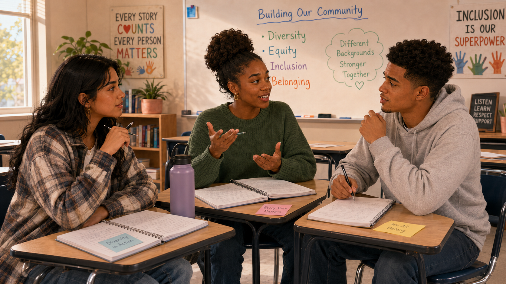

Anti-bias approach
🔎 Choose the strongest response
What best describes anti-bias teaching with young children?
Using anti-bias curriculum in everyday classroom moments

Jordan: “I understand having diverse books, dolls, music, and classroom materials. But when people say anti-bias curriculum, it sounds more intense. Are young children really ready for that?”
Aaliyah: “I don’t think it means giving children adult-level lectures. It means helping them notice fairness, respect differences, and speak up when someone is treated unfairly.”
Maya: “Like if a child says, ‘You can’t play because your skin is too dark,’ or ‘Boys can’t wear that,’ the teacher shouldn’t just ignore it or quickly change the subject.”
Jordan: “So anti-bias teaching is not about making children feel guilty. It’s about helping them understand that words and actions can include people or hurt people.”
Aaliyah: “Children are already noticing differences. Teachers can help them talk about those differences with respect instead of silence or shame.”
Maya: “Maybe anti-bias curriculum means we don’t wait until children are older to teach fairness. We help them practice it in everyday classroom moments.”
What best describes anti-bias teaching with young children?
The descriptions are shuffled. Match each goal with its best meaning.
A child says, “You can’t play because your skin is too dark.” What is the best response?
A child says, “Boys can’t wear pink.” Which response is strongest?
Which practice most strongly promotes a multicultural classroom?
Two children disagree over a dramatic-play role. What should the educator do?
Children notice that “flesh-colored” bandages match very few classmates. Which next step best reflects anti-bias action?
Why should culture matter when teachers guide behavior?
Which statement best integrates Esquivel Chapter 6?
When a biased comment occurs, an early childhood teacher should…
Educators should address harmful interactions rather than ignore them, while keeping explanations developmentally appropriate.
Did your response affirm the child targeted, name the unfairness, and help children think about a better action?
Anti-bias curriculum aims not only for respectful attitudes but for children’s growing ability to recognize and challenge unfairness.